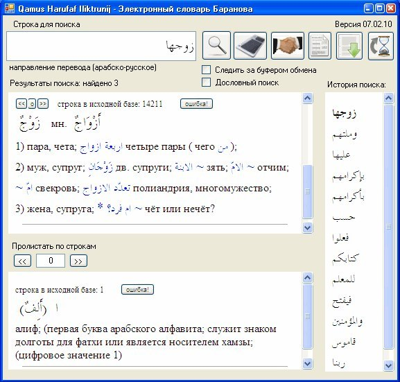

Арабский Язык
Образование доступно каждомуИзучение арабского языка
Убай ибн Къаб да будет доволен им Аллах, говорил: «Изучайте арабский язык, подобно тому, как вы заучиваете Коран«. (См. «Мусаннаф» 10\7\30517).
Шуъба говорил: «Изучайте арабский, поистине, он прибавит разума» (См «Амли аз-Зуджаджи» стр.185).
Шейхуль-ислам Ибн Таймия сказал: «Поистине, сам по себе арабский язык из религии, и его познание является обязательным, поскольку понимание Корана и Сунны является обязательным. И невозможно их понять, кроме как посредством понимания арабского языка. А то, без чего невозможно выполнить вмененное в обязанность, также становится обязательным. Но из арабского языка есть то, что является обязанностью для каждого (фардуль-айн) и то, что является обязанностью лишь для группы (фардуль-кифая)!». (См. «Икътида Сыраталь-Мустаким» 1\469).
О ВАЖНОСТИ ИЗУЧЕНИЯ И ПРЕПОДАВАНИЯ АРАБСКОГО ЯЗЫКА Шейх Салих али Шейх (да хранит его Аллах)
Шейх Салих али Шейх
SunnaPortal
"Существует вопрос, связанный с манхаджем праведных предшественников в деле призыва и знания, который заключается в проявлении заботы к изучению арабского языка. Коран был ниспослан на ясном арабском языке. Каким образом мы сможем понять Коран, его повествования, приказы, запреты, ограничения, обещания и угрозы? Каким образом мы сможем понять то, о чем нам рассказал Аллах в Своей Книге? Каким образом это сможет повлиять на наши сердца? Ответ на все эти вопросы заложен в изучении арабского языка. Поэтому, когда праведные предшественники призывали к Аллаху в той или иной стране, которую они завоевывали посредством знаний и Корана прежде своих мечей, они обучали народы этих стран в первую очередь арабскому языку. Поэтому арабский язык и арабская филология распространились до такой степени, что представители других наций даже заложили для нас (мусульман в целом или арабов) теорию правил арабского языка. Причиной тому послужила великая забота, проявляемая ими к арабскому языку.
Поэтому ты можешь заметить, что в нынешнее время праведники из числа обладателей знания по всему миру стремятся обучать людей этому языку.Почему? Не потому что это язык арабской нации, а потому что это язык религии Ислам, язык Корана, язык понимания Аллаха и Его Посланника (мир ему и благословение Аллаха). Поэтому уделять внимание обучению арабскому языку является одним из качеств праведных предшественников в методологии (манхадже) их призыва. Они не призывали на других языках и не оставляли людей без понимания арабского языка, не говорили, к примеру, обучив их чему-то из Ислама: «Идите и призывайте людей к Исламу на своем языке». Наоборот, они обучали их Исламу на арабском языке настолько, насколько это было возможно. И не может быть, чтобы призывающий, обладающий ясным знанием в своем призыве, не знал бы арабского языка. Поэтому призывающие должны уделять внимание арабскому языку в исламских центрах, учреждениях, организациях по всему миру. Ислам будет крепким только тогда, когда обладатели знания и призывающие будут сильны в арабском языке. Если мы овладеем арабским языком и будем правильно понимать его, говорить на нем и извлекать пользы из него, то мы поймем Книгу Аллаха и Сунну Его Посланника (мир ему и благословление Аллаха)".
Электронный арабский словарь Баранова
Баранова
Словарь
Словарь учитывает распространенные слово-формы. Хранит историю поиска, автоматически переводит выделенные слова. Содержит возможность отмечать найденные ошибки (для последующего улучшения программы).
1. Возможность следить за буфером обмена. Если выставить эту опцию - при копировании новых слов (ctrl+c) - они будут автоматически попадать в программу и переводится. Экономия времени на вставке в окно программы. Если вам мешает это - отключите опцию.
2. Работает словообразование. Теперь программа сама отсекает приставки и окончания слов в самых распространенных случаях (те, что пишутся слитно со словом, включая личные местоимения). Если программа столкнется со словом بالقلم - то выдаст перевод слова قلم (отбросит определенный артикль "аль" и предлог "би" Введя слово والمؤمنين вы получите перевод слова مؤمن Введя слово ربنا вы получите перевод слова رب и т.д. Сами поэкспериментируйте и посмотрите остальное. Если вам мешает эта опция - можете отключить ее.
3. Добавлена возможность сохранять историю поиска. Все удачные результаты поиска сохраняются в специальной панели и кликнув по ним мышью вы можете быстро переходить от одной статьи к другой.
Версия 07.02.10 Изменения по сравнению с версией 02.01.10
О важности изучения арабского языка
Сахаба Умар ибн аль-Хаттаб (رضي الله عنه) сказал: "Изучайте фарды, сунны и литературный арабский язык (познавая грамматические правила), подобно тому, как вы изучаете Куран." (См.ибн Абдуль-Барр: "Джамиа байаниль-ъильм уа фадль"1/1009)
Сахаба абу Джафар (رضي الله عنه) сказал: "Одним из знаний мужчины является знание литературного арабского языка." (См.ибн абу Шейба "Мусаннаф" 10/9/30529)
Убай ибн Кааб (رضي الله عنه) говорил: "Учите арабский язык подобно тому, как вы заучиваете Куран." (См.ибн абу Шейба "Мусаннаф" 10/7/30517)
Так же, Умар ибн аль-Хаттаб (رضي الله عنه) говорил: "Изучайте литературный арабский язык, ибо это увеличивает мужскую доблесть." (См.аль-Хаттыб "Джамиа"2/25)
Имам аш-Шуъба (رحمة الله عليه) говорил: "Изучайте арабский, поистине, он прибавляет ум." (См."Амли аз-Зуджаджи"185)
Имам Мухаммад ибн Идрис аш-Шафи'и (رحمه الله تعالى) сказал: "Обязан каждый мусульманин изучать арабский в той мере, насколько это поможет ему в исполнении возложенных на него обязанностей."
Имам аль-Мауарди (رحمة الله عليه) сказал: "Познание арабского языка является обязательным для каждого из числа ученых и других." (См.аш-Шаукани "Иршадуль-Фухуль" 2/719)
Имам Мухаммад ибн Идрис Шафи'и (رحمة الله عليه) говорил: "Язык, который избрал Аллах, Велик Он и Всемогущ – это арабский язык. Он ниспослал на этом языке Свою Книгу и сделал его языком последнего Пророка Мухаммада (صلى الله عليه وسلم). Поэтому мы говорим: "Каждому, кто в состоянии изучать арабский язык, необходимо изучать его, поскольку этот язык является первым, к чему побуждают без запрещения кому-либо разговаривать на другом языке." (См."Икътида ас-Сырат аль-Мустакъим" 1/464)
Шейхуль-Ислам ибн Таймия (رحمه الله تعالى) сказал: "Поистине, сам по себе арабский язык из религии, и его познание является обязательным, поскольку понимание Корана и Сунны является обязательным. И невозможно понять их, кроме как посредством понимания арабского языка. А то, без чего невозможно выполнить обязательное веление, кроме, как посредством этого, так же становится обязательным. Но из арабского языка есть то, что является обязанностью для каждого (фард аль-айн) и то, что является обязанностью лишь для группы (фард аль-кифая)!" (См."Икътида ас-Сырат аль-Мустакъим" 1/469)
Умар ибн аль-Хаттаб (رضي الله عنه) сказал: "Изучайте литературный арабский язык и фарды, ибо это часть вашей религии." (См.ибн абу Шейба "аль-Мусаннаф" 10/9/30528)
Имам ибн абу Шейба (رحمه الله تعالى) с собственной цепочкой передатчиков приводит, что однажды Мухаммад ибн Са’д ибн абу Уаккас услышав людей, которые разговаривали на персидском языке, сказал: "Зачем нужна религия огнепоклонников, после религии единобожия (аль-ханифийа)?!" (См.ибн абу Шейба "Мусаннаф" 8/548/26792)
Имам ас-Суюты (رحمة الله عليه) говорил: "Я нашел, что праведные предшественники до имама Шафи'и, указывали на то, что одна из причин новшества – это незнание арабского языка." (См."Сан аль-Мантык"15)
Имам ибн Хазм (رحمه الله تعالى) сказал: "Что касается того, кто охарактеризовал себя именем знания и понимания, в то время, как он не знает арабской грамматики (наху) и языка, то запрещено (харам) ему выносить решения (фатка) в религии Аллаха, даже будь это всего лишь одно слово. А так же запрещено мусульманам обращаться к нему за фетвой, поскольку у него нет знания языка, с которым обратился к нам Аллах." (См."Расаиль" 3/162)